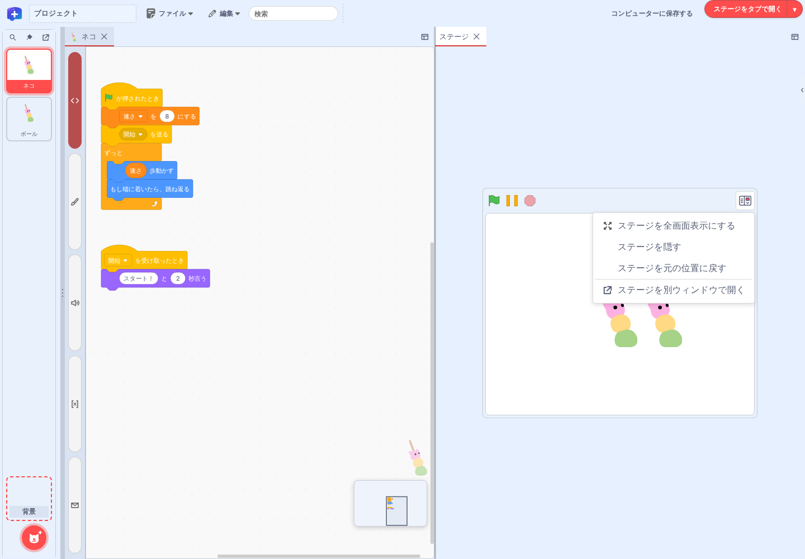

機能ガイド 4/12 · 2026年11月14日更新
ステージを開いて作品を動かす
ステージは、メニューバー右側の「ステージを開く」から、別ウィンドウ・タブ・引出しのうち作業に合った場所に開きます。全画面表示や置き場所の変更は、ステージの「ステージの表示」メニューから行います。
4.1 メニューバーからステージを開く
メニューバー右側の「ステージを開く」を押すと、ステージがブラウザーの別ウィンドウで開きます。右の「▾」（ステージの開き方）を押すと、開く場所を選べます。
| 項目 | 開く場所 | 向いている使い方 |
|---|---|---|
| 別ウィンドウで表示 | ブラウザーの別ウィンドウ | 2台目のディスプレイに置いて、コードと並べる |
| タブで表示 | 作業領域の「ステージ」タブ | コードの隣にステージを固定して置く |
| 引出しで表示 | 画面右端の引出し | コード領域の上に重ねて表示し、必要がなくなったら閉じる |
ステージが表示されている間、「ステージを開く」と「▾」は押せなくなります。引出しを閉じたり隠したりすると、また押せるようになります。開き方を変えたり全画面表示にしたりするときは、開いたステージの「ステージの表示」を使います（ステージの表示メニュー）。

4.2 右端の引出しで作品を動かす
「引出しで表示」を選ぶと、ステージが画面右端の引出しに開き、コード領域の上に重なります。緑の旗で実行を始め、一時停止や停止で動きを確かめます。引出しの左辺や下辺の境界をドラッグすると、ステージの大きさを変えられます。
引出しは、はじめは常時表示です。引出しの「ステージの表示」から「引出しを自動的に隠す」を選ぶと、引出しの外をクリックしたときに引出しが閉じ、画面右端に「ステージを展開」のつまみが残ります。つまみを押すと引出しがまた開きます。常時表示に戻すには、同じメニューの「引出しを常時表示する」を選びます。
「引出しを自動的に隠す」は、引出しの外をクリックするたびに引出しを閉じる設定です。「引出しを閉じる」は、設定に関係なく、その場で引出しを1回閉じる操作です。どちらの場合も、閉じた後は右端の「ステージを展開」か、メニューバーの「ステージを開く」で引出しを開き直せます。引出しを閉じたり隠したりしても、作品の実行は続きます。引出しの状態は作品ごとに記録され、次にその作品を開いたときに再現されます。
4.4 ステージを作業領域や別ウィンドウに移す
引出しやタブで開いたステージは、「ステージの表示」から置き場所を移せます。コードの隣に置くには「タブで表示」を選びます。作業領域に「ステージ」タブが開き、境界をドラッグして広さを調整できます。タブのステージは、ペインの幅に合わせて拡大・縮小されます。引出しに戻すには「引出しで表示」を、ステージを閉じるには「タブを閉じる」を選ぶか、「ステージ」タブを閉じます。
ブラウザーの別ウィンドウで使うには「別ウィンドウで表示」を選びます。引出しからもタブからも移せます。別ウィンドウの「ステージの表示」から「エディターに戻る」を選ぶと、別ウィンドウが閉じ、ステージは閉じた状態になります。もう一度表示するには、メニューバーの「ステージを開く」を使います。
「タブで表示」でタブへ
「引出しで表示」で引出しへ
引出し・タブから「別ウィンドウで表示」
「エディターに戻る」の後。「ステージを開く」で開き直す
